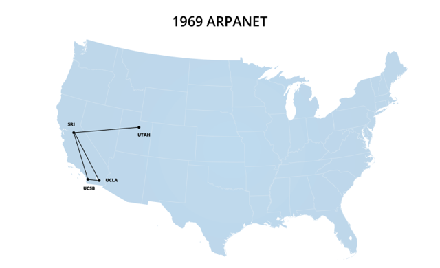
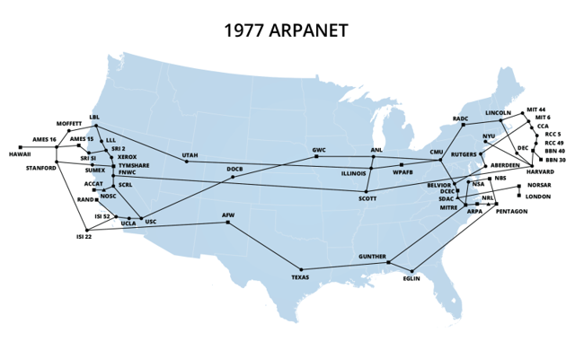
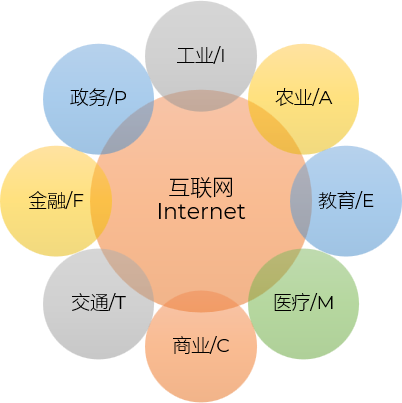

1. 有线电视网络
向用户传送各种电视节目
2. 电信网络
提供电话、电报及传真等服务
3. 计算机网络
使用户能在计算机之间传送数据文件
有线电视网络：传送电视节目（单向广播）
电信网络：提供电话、电报及传真等服务（语音/电路交换）
计算机网络：在计算机间传送数据文件（分组交换）
有线电视网络不仅能看电视，也能上网（比如广电宽带）
电信网络不仅能打电话，也能看IPTV（网络电视）
计算机网络更是集成了语音（VoIP）、视频（如抖音、腾讯视频）等所有业务
BBS
Mud
Maze
UCLA 加州大学洛杉矶分校节点
SRI 斯坦福研究所节点
UCSB 加州大学圣塔芭芭拉分校节点
UTAH 犹他大学节点



| item | description |
|---|---|
| 广域网 WAN
Wide Area Network |
通常为几十到几千公里 也称为远程网(long haul network) 是互联网核心部分的主要组成部分，负责长距离数据传输 |
| 城域网 MAN
Metropolitan Area Network |
作用范围一般是一个城市 作用距离约为5~50 km |
| 局域网 LAN
Local Area Network |
局限在较小的范围（如1 km左右） 通常采用高速通信线路 |
| 个域网 PAN
Personal Area Network |
范围很小，大约在10 m左右 有时也称为无线个人区域网(WPAN) |
从覆盖范围看：PAN < LAN < MAN < WAN
从传输速率看：通常范围越小，速率越高（如LAN速率通常高于WAN）
| item | description |
|---|---|
| 公用网
Public Network |
按规定交纳费用的人都可以使用的网络
也称公众网 |
| 专用网
Private Network |
为特殊业务工作的需要而建造的网络
银行、军队等特殊职能部门 |
中国第一家以风险投资资金建立的互联网公司
两年后，更名为搜狐公司(Sohu)
搜狐网站(Sohu.com)是中国首家大型分类查询搜索引擎
中国第一家中文全文搜索引擎
超大容量免费邮箱（如163和126等）
新浪的微博是全球使用最多的微博之一
试验网以 2.5~10 Gbit/s 的速率连接北京、上海和广州三个 CERNET 核心节点，并与国际下一代互联网相连接
中国互联网络信息中心 CNNIC (China Network Information Center) 每年两次公布我国互联网的发展情况
386
486
586
win95
win98